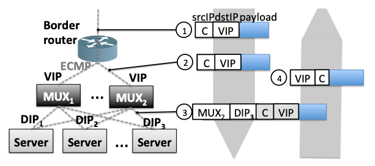

#1125 Stateless Datacenter Load-balancing with Beamer¶
cf 的 unimog 不少思路来自 Stateless Datacenter Load-balancing with Beamer https://www.usenix.org/system/files/conference/nsdi18/nsdi18-olteanu.pdf 这篇论文。
这篇论文里也有一些 cf blog 里一带而过或者没说的细节：
vip 是使用 Quagga https://www.quagga.net/ 做的。
从包到 forwarding table 中的条目的映射这个使用的 hash 算法就是普通的哈希算法（crc32），但是每一个条目到 DIP 映射的更新策略这一块可以使用一致性哈希、rendezvous 哈希、Maglev 的算法等，防止一变更基本所有的 hash 目标服务器都变了。
beamer 是既有硬件产品也有软件产品的，在硬件情况下就是非对称部署，这个时候在目标服务器上解 GUE 包后需要将 VIP 改成 DIP，然后继续处理，处理完成后再将回包中的 DIP 改回 VIP 再发出去。
根据 beamer 的 cf 的 blog，可以大致推断 unimog 的 consul 里存储的数据结构大致如下：
/unimog/ config/ bucket_count <- forwarding_table 的条目数 vip/ 141.85.37.8 ... dips/ dip1,weight1 dip2,weight2 ... forwarding_table <- unimog xdp 程序只需要读这个数据
下图是从 beamer 论文里截出来的，基本将负载均衡的整个流程描述清楚了，图中 mux 是负载均衡，是非对称部署的，对称部署就是 mux 和 server 合二为一。
